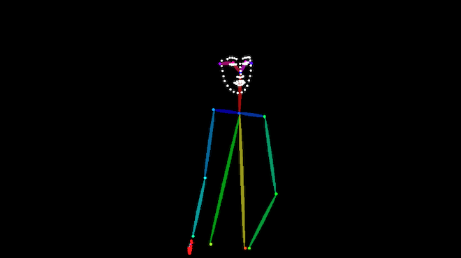

Pose-Controlled Diffusion Transformers for Text-to-Video Generation
Exploring controllable text-to-video generation for film and media production, focusing on integrating skeleton-pose sequences into diffusion-based video generation pipelines to improve motion controllability, pose alignment, and temporal consistency.
This internship focused on controllable AI video generation for film and media production scenarios. While text-to-video models can generate video content from natural language prompts, text alone is often insufficient for controlling human motion, pose alignment, action rhythm, and temporal consistency. For film and content production, these controllability requirements are important because generated clips need to follow specific character movements and visual structures rather than only matching a general text description.
The work explored pose-controlled video generation based on the OpenSora / Open-Sora framework. The overall generation pipeline followed a diffusion-based text-to-video approach with a Diffusion Transformer-style architecture for modeling spatial and temporal video features. To improve controllability, the project incorporated skeleton-pose sequences as additional structural conditions, inspired by ControlNet-style conditioning methods. These pose signals were used to guide the generated video toward desired human motion patterns while preserving the text-conditioned generation capability.
A major part of the workflow involved preparing pose-conditioned training data from video materials. Human keypoints were extracted from selected video clips using computer vision tools, covering body, face, eye, and mouth landmarks when applicable. The extracted frame-level keypoints were then re-rendered into skeleton-pose videos aligned with the original video timeline, forming paired training samples consisting of text descriptions, original videos, and pose-control videos.

The project aimed to evaluate whether structured visual control signals could improve motion controllability and temporal consistency in text-to-video generation. By combining pose-conditioned data construction with modifications to the OpenSora training and generation pipeline, this work provided early technical validation for AI-assisted video production, character motion control, and controllable media generation applications.